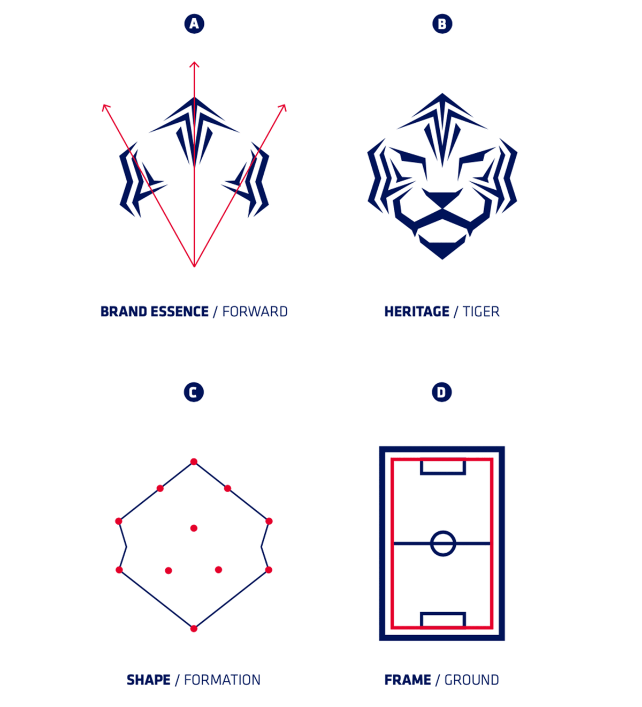

KOREA FOOTBALL ASSOCIATION
다시 뛰는 한국 축구 보러가기투명한 선임 · 열린 거버넌스 · 유소년 회복
감독 한 사람을 바꾸는 일로 끝내지 않는다.선임의 절차, 협회의 주인, 미래 세대에 대한 투자를 처음부터 다시 세운다.
이 보고서는 위기의 원인을 구조로 진단하고, 세 개의 축으로 해법을 제시한다. 각 과제는 취임 100일·임기 중·제도화의 세 단계로 나눠 실행 가능성을 밝힌다.
월드컵 탈락은 결과였다. 2년 전 밀실 선임에서 이미 예고된 실패였음을 데이터로 짚는다.
→ 02감독 선임 카르텔 청산, 거버넌스 민주화, 유소년·재원 회복. 문제를 사람이 아니라 시스템으로 규정한다.
→ 03정부·체육회와 손잡되 협회의 자율성은 지킨다. FIFA 규정과 개혁 요구 사이의 균형점.
→ 042002년 그 함성에 빚진 우리가, 그 빚을 다음 세대에게 갚는다. 개혁의 이유.
→ 05숫자로 말하고, 과정을 공개하며, 팬에게 돌려주는 축구협회로.
→역대 최고의 선수단으로 역대 최악의 성적을 냈다. 냉정하게 말하면, 성적은 원인이 아니라 결과다. 출발부터 절차적 정당성을 잃은 사령탑, 견제받지 않은 13년의 권한, 미래 세대에서 빠져나간 예산. 세 가지가 겹쳐 만든 예견된 일이었다.
지금까지 협회는 위기 때마다 감독을 내세워 분노를 흡수했다. 이번에도 물러난 것은 감독 한 사람뿐이었다. 그 반복을 끊는 것에서 시작한다.
이럴 거면 게임 플랜은 왜 발표했고, 전력강화위원회는 왜 만들었느냐. 위원회가 존재할 이유를 찾을 수 없었다.
— 박주호 전 국가대표전력강화위원, 2024.7 유튜브 폭로 (뉴시스 재보도, 2026.7)문화체육관광부는 클린스만·홍명보 두 감독 선임 과정에서 협회의 자체 규정이 지켜지지 않았다는 조사 결과를 발표했다. 외국인 후보(마치·포옛)는 면접을 거쳤으나 홍 감독은 면접 없이 기술이사가 직접 찾아가 하루 만에 선임됐다. (한국경제·머니투데이)
로이터는 팬의 분노가 경기 결과가 아니라 불투명한 선임·책임 부재·행정 불신의 누적에서 비롯됐다고 분석했다. (로이터, 2026.7)
리더가 임기 중 성과를 내지 못했다면 다음 선거에서 책임을 지는 것이 상식이다. 그러나 지금의 체육관 선거 방식에서는 소수의 선거인단만 관리하면 재선이 가능하다.
— 박문성 축구해설위원, 2026.7 방송 인터뷰4선 당시 선거인단 지지율은 86%였지만, 같은 시기 팬 여론의 반대는 90%에 육박했다. 소수 대의원과 전체 민심이 정반대로 갈렸다. (박문성 인터뷰)
박지성 K-축구 혁신위 공동위원장도 "현행 제도로는 안 된다"며 민주적 절차에 따른 선거로의 전환에 공감했다. 정부·대한체육회는 궐위 후 정관을 먼저 바꾸고 직선제를 단계적으로 추진하는 방안을 검토 중이다. (한국일보·뉴데일리, 2026.7)
공공재원 편성 규모는 2024년 503억에서 2025년 312억으로 줄었다. 미래 세대 투자가 뒷걸음친 사이, 스포츠토토 복표 수익 같은 공적 자금은 여전히 '자체 수익'으로 계상돼 왔다. (이택스뉴스 칼럼 · KFA 결산 재확인 필요)
일본은 30~40년 장기 프로젝트로 유소년부터 A대표팀까지 하나로 이어지는 시스템을 만들었다. 우리가 뒤처진 현실을 인정하는 것이 먼저다.
— 축구계 개혁 진단 (뉴데일리, 2026.7)K-축구 혁신위원회도 유소년 육성 체계 개편과 데이터·AI 기반 첨단 기술 시스템 도입을 3대 핵심 과제로 설정했다. (파이낸셜뉴스·한국일보, 2026.7)
“절차 안에서 이뤄진 게 하나도 없었다.”
개혁의 압박은 정부·국회·혁신위에서 온다. 이 힘을 적으로 돌리면 팬 여론을 잃고, 그렇다고 끌려가면 FIFA의 정치 개입 금지 원칙에 걸려 협회의 독립성을 스스로 내주게 된다. 여기서 관건은 균형이다. 정부를 개혁의 파트너로 두되, 축구 행정의 자율성이라는 선은 분명히 지킨다.
축구협회의 독립성은 반드시 보장받아야 할 가치이며 약속이다. 정부가 정해진 범위를 넘어 축구협회에 개입하는 건 있을 수 없는 일이다.
— 최휘영 문화체육관광부 장관, K-축구 혁신위 출범식 (한국일보, 2026.7)정부 스스로 그은 이 선이 개혁의 발판이다. K-축구 혁신위는 차기 회장 선거에 출마하지 않는 인사들로만 구성돼 권력 경쟁이 아니라 제도 개혁에 집중한다. 정부는 조력자로 물러서고, 협회는 자율적으로 개혁을 완성한다 — 이 구도를 지키는 것이 이번 국면의 핵심 감각이다.
이해관계자는 여섯이다. 각자에게 다른 언어로 같은 목표를 설득한다.
앞으로 나아간다는 말은, 어디로 나아갈지 아는 사람에게만 약속이 된다.
Moving Forward. 협회가 스스로 내건 슬로건이다. 그러나 지난 몇 년, 앞으로 나아간 것은 구호뿐이었다. 방향을 잃은 전진은 표류다. 우리는 이 슬로건을 폐기하지 않는다. 되찾는다. 전진의 방향을 다시 세 개의 좌표로 고정한다.
2021년 새 엠블럼은 유럽식 휘장을 걷어내고 네 개의 원리로 다시 그려졌다. 전진, 헤리티지, 전술대형, 그리고 그라운드. 공교롭게도 이 네 가지가 지금 협회에 필요한 개혁의 언어와 정확히 겹친다.

우측으로 향하는 화살. 밀실이 아니라 공개된 절차로 나아간다.
피하지 않는 얼굴. 책임을 회피하지 않는 협회의 태도.
한 사람이 아니라 열한 명이 함께. 권한이 분산된 거버넌스.
모두가 뛰는 공적 자산. 팬과 유소년에게 열린 협회.
2020년, 협회는 2년을 들여 19년 만에 엠블럼과 브랜드를 새로 세웠다. 그 자리에서 회장은 "안주냐 도전이냐의 기로에서 도전을 택했다"며 협회의 모토로 'Moving Forward, 전진하는 축구문화'를 약속했다. 색에도 뜻을 담았다 — 곤룡포의 레드는 용맹을, 동해의 블루는 위엄과 역동을. 문제는 브랜드가 아니라 행정이었다. 색이 내건 가치를, 그 색을 만든 협회가 스스로 저버렸다.
새 브랜드는 죄가 없다. 'Moving Forward'라는 구호도 옳았다. 다만 그 약속을 행정이 지키지 않았을 뿐이다. 우리는 브랜드를 또 바꾸자는 것이 아니다. 이미 걸어둔 약속을, 이번엔 행정으로 지키자는 것이다.
2002년 이 자리를 붉게 채웠던 함성은 저절로 오지 않았습니다. 누군가 오래전 뿌린 씨앗이 그날 꽃으로 피었을 뿐입니다. 지금 우리가 심지 않으면, 20년 뒤 이 스탠드를 채울 함성도 없습니다. 늦었다고 말하기 전에, 오늘 바꿔야 합니다. 한국 축구의 유산은 트로피가 아니라, 다음 세대에게 건네는 더 나은 출발선입니다.
선언이 아니라 실행으로 증명한다. 감독 선임의 기록을 열고, 협회의 장부를 열고, 미래 세대를 위한 투자를 되돌린다. 대한민국 축구의 내일은 그 세 가지에서 다시 시작된다.